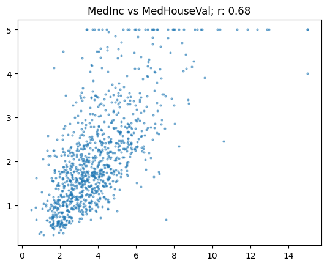
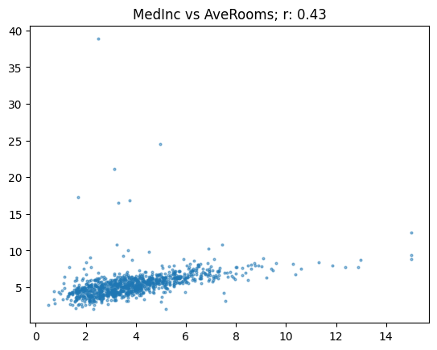
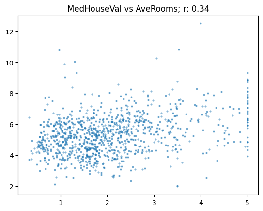

Fundamentals of Text Classification and Correlation in Natural Language Processing
kaggle
huggingface spaces
nlp
Author
Bui Huu Dai
Published
September 13, 2024
Hello and welcome, aspiring data scientist and NLP enthusiasts!
Today, we’re going to explore the fascinating of Natural Language Processing (NLP) and its application in text classification.
In this blog post, we’ll walk through the process of tackling a text similarity problem using modern NLP techniques. We’ll cover everything from data preparation to model training and evaluation. Along a way, we’ll also delve into correlation analysis using a classic dataset, helping us understand the importance of metrics in machine learning.
We’ll be using popular libraries like Transformers, pandas, matplotlib to bring our data to life and gain meaningful insights.
Alright enough chit chat, let’s roll up our sleeves and dive into the world of NLP.
Data Preparation
Alright, let’s drive into the data preparation for the U.S. Patent Phrase to Phrase Matching challenge. To start, you need to download the dataset using the Kaggle APi. Follow the installation instruction in their Github page, and then you can grab the dataset with the following command:
With the data in hand, let’s firer up python environment and take a closer look:
from pathlib import Pathimport matplotlib.pyplot as pltimport numpy as npimport pandas as pd# Define the path to the datapath = Path("./data")df = pd.read_csv(path /"train.csv")# Display the dataframedf.head()
id
anchor
target
context
score
0
37d61fd2272659b1
abatement
abatement of pollution
A47
0.50
1
7b9652b17b68b7a4
abatement
act of abating
A47
0.75
2
36d72442aefd8232
abatement
active catalyst
A47
0.25
3
5296b0c19e1ce60e
abatement
eliminating process
A47
0.50
4
54c1e3b9184cb5b6
abatement
forest region
A47
0.00
Examining the data is always the first step. Let’s peek at some summery statics to get an initial sense of what we’re working with:
df.describe(include="object")
id
anchor
target
context
count
36473
36473
36473
36473
unique
36473
733
29340
106
top
8d135da0b55b8c88
component composite coating
composition
H01
freq
1
152
24
2186
Notice something interesting? The anchor field has only 733 unique values in a dataset of 36,000 entries. That’s a clear sign of repetition, suggesting some phrases appear frequently.
Now, onto preparing data for our model. In this task, our goal is to determine if two phrases have similar meanings. To give our model more context. Let’s add structure labels like “TEXT1:” and “TEXt2:”. This helps in making data more informative, alright because we have to do the same thing to our test set so i will write a function for this:
Adding context can be incredibly valuable providing the model with the background it need to understand nuanced of differences or similarities, especially in specialized field like patents.
Next we convert our Pandas DataFrame into a Dataset Object and apply the process function:
from datasets import Dataset, DatasetDict# Convert the DataFrame to a Datasetds = Dataset.from_pandas(df)# Apply the preprocessing functionds = ds.map(preprocess_function)# Show the first 5 preprocessed inputsprint(ds["input"][:5])
By structuring the data in this manner, we offer the model clear, consistent inputs, improving its ability to analyze and match the patent accurately
Tokenization
In the previous section, we got the data ready, Now, let’s dive into tokenization. a crucial step before feeding the data into a neuron network.
As i already talk about it in the previous blog post, Neuron network work with numbers not text so how do we bridge this gab, there are to main steps: Tokenization and Numericalization.
Step 1: Tokenization
Tokenizations involves splitting the text into smaller units called tokens. Tokens can be words, subwords or even character depending on the tokenization technique. For simplicity let’s think tokens are words
Once we split the text into tokens, we compile a list of all unique tokens, this list is known as the vocabulary. Every token in this vocabulary gets assigned a unique number. This mapping from tokens to numbers allows a neural network to process the text data.
However, there’s a catch! The larger the vocabulary, the more memory and data you need for training. To keep thing manageable, modern tokenization techniques often break words into subwords. Which help to minimize the vocabulary size. This process of breaking text into smaller units is called tokenization, and the smaller units are referred as tokens.
Step 2: Numericalization
In this step each token is converted into its unique ID based on its position in the vocabulary this process is called numericalization
Choosing a Tokenizer
Choosing a tokenizer involves several little decisions. The good news? you don’t have to these decisions yourself. Pre-trained models come with their own tokenization methods, and to use these model effectively, you need to use same tokenization approach they were trained with.
Enter HuggingFace’s transformers library. It provides a convenient way to load pre-trained models and their corresponding tokenizers. One highly versatile model is deberta-v3
Here’s how you can set it up:
model_nm ="microsoft/deberta-v3-base"
We choose this model to ensure our tokenization matches the pre-trained model’s tokenization process. This consistency is crucial.
To load the tokenizer that correspond to our chosen model, we you AutoTokenizer from Hugging Face’s transformer library. This utility automatically fetches the correct tokenizer for our model:
from transformers import AutoModelForSequenceClassification, AutoTokenizer# Load the tokenizer for our modeltokz = AutoTokenizer.from_pretrained(model_nm)
/opt/conda/lib/python3.10/site-packages/transformers/tokenization_utils_base.py:1601: FutureWarning: `clean_up_tokenization_spaces` was not set. It will be set to `True` by default. This behavior will be depracted in transformers v4.45, and will be then set to `False` by default. For more details check this issue: https://github.com/huggingface/transformers/issues/31884
warnings.warn(
/opt/conda/lib/python3.10/site-packages/transformers/convert_slow_tokenizer.py:551: UserWarning: The sentencepiece tokenizer that you are converting to a fast tokenizer uses the byte fallback option which is not implemented in the fast tokenizers. In practice this means that the fast version of the tokenizer can produce unknown tokens whereas the sentencepiece version would have converted these unknown tokens into a sequence of byte tokens matching the original piece of text.
warnings.warn(
With the tokenizer loaded, you can now tokenize your text data in the same way the model was trained to do.
Alright, at this point we can use our tokenization to process strings. Let’s start with a simple example. If we pass this string “Hi folks, I’m Dai from my mother!” to the tokenizer, we can see how it breaks the text in to tokens
tokz.tokenize("Hi folks, I'm Dai from my mother!")
You’ll notice doesn’t just split the text into words. If you’ve wondered “I’m” is one word or two, you’ll find that it’s actually three tokens according to this tokenizer. These tokens include partial words and punctuations. The character looks like underscore here signify the start of the word
Here’s a less common sentence: “A platypus is an ornithorhynchus anatinus”.
tokz.tokenize("A platypus is an ornithorhynchus anatinus.")
In this vocabulary, “platypus” gets its own token, but “ornithorhynchus” is split into smaller parts. Each of these tokens corresponds to an entry in a predefined vocabulary list created during the model’s pre-training. Somewhere in that list, we’ll find “A”, and it will have a specific number. This process of converting tokens to numbers is called numericalization. To accomplish this for our dataset, we create a function that tokenizes the “input” field:
def tok_func(x): return tokz(x["input"])
Since tokenization can be time-consuming, especially for large dataset. Leveraging parallel processing can save time. we’ll utilize batching to process multiple entries simultaneously
tok_ds = ds.map(tok_func, batched=True)
Ensure that batched=True is passed to enable batch processing. This approach uses the tokenizer library optimized for performance wit Rust. Batch processing can significantly speed up the tokenization process
Now let’s examine a row from our tokenized dataset:
The output show that the dataset retains the original string in the “input” field and includes a new “input_ids” field with the numerical representation of each token. The numbers here are the numerical positions of tokens in the vocabulary. This step efficiently convert our text into number, readying it for model input.
Alright, we now need to prepare our labels. Transformer always assumes that your labels has column name labels, but it our data set there’s no labels but score, we need to rename it.
tok_ds = tok_ds.rename_column("score", "labels")
Now let’s split our dataset into train and validation set
When working with a validation set, one of the key steps is to measure some metrics. A metric, such as “accuracy” gives us a quantifiable measure of how good our model is.
A common question arises here: is the metric the same as the loss function? The answer is nuanced. The metric used to evaluate model performance isn’t necessarily the one to be used for optimization during the training. Taking the derivative of accuracy to find the gradient for parameter updates, for example, isn’t very effective.
Why? You ask! Because accuracy doesn’t change significantly unless predictions switch from incorrect to correct, resulting in gradients being nearly zero everywhere. Instead, we prefer smooth functions like MSE or MAE for the loss function. These provide better gradients for optimization, helping improve the model more effectively.
Pearson Correlation Coefficient
Let’s focus on our metric of interest today, the Pearson Correlation Coefficient often abbreviated as r. This coefficient is a widely used measure that evaluates the similarity between two variable, if our predictions closely match the actual values, r will be high, ranging between -1 and 1. An r of -1 means predictions are exactly the wrong answers (which could still be useful, as reversing the answer would yield perfect results), while r of 1 signifies perfect predictions.
You can read this for more info about the formula and example but i think the best way to understand how data behaves is to look at real-life data. Scikit-learn offers numerous datasets, one of which is the “California housing” dataset. Here’s how you can explore this dataset:
from sklearn.datasets import fetch_california_housinghousing = fetch_california_housing(as_frame=True)housing = housing['data'].join(housing['target']).sample(1000, random_state=52)housing.head()
MedInc
HouseAge
AveRooms
AveBedrms
Population
AveOccup
Latitude
Longitude
MedHouseVal
7506
3.0550
37.0
5.152778
1.048611
729.0
5.062500
33.92
-118.28
1.054
4720
3.0862
35.0
4.697897
1.055449
1159.0
2.216061
34.05
-118.37
3.453
12888
2.5556
24.0
4.864905
1.129222
1631.0
2.395007
38.66
-121.35
1.057
13344
3.0057
32.0
4.212687
0.936567
1378.0
5.141791
34.05
-117.64
0.969
7173
1.9083
42.0
3.888554
1.039157
1535.0
4.623494
34.05
-118.19
1.192
To compute the Pearson correlation coefficient, Numpy provides the corrcoef() function, which return a correlation matrix:
However, we need a single correlation number rather than a matrix. Fortunately, if we pass in a pair of variable, we could still get a matrix, from which we can extract the desired coefficient.
np.corrcoef(housing.MedInc, housing.MedHouseVal)
array([[1. , 0.68],
[0.68, 1. ]])
To get a specific correlation coefficient, simply select the zeroth row and the first column:
To visualize the correlation, we can plot the data and display the correlation coefficient r:
import matplotlib.pyplot as pltdef show_corr(df, a, b): x, y = df[a], df[b] plt.scatter(x, y, alpha=0.5, s=4) plt.title(f'{a} vs {b}; r: {corr(x, y):.2f}')
For instance, the plot of “median income” vs. “median house value” shows an r of 0.68.
show_corr(housing, 'MedInc', 'MedHouseVal')

Exploring other pairs, like “median income” vs. “number of rooms per house,” gives an r of 0.43.
show_corr(housing, 'MedInc', 'AveRooms')

This plot reveals interesting insights and anomalies. Certain houses have many rooms but lower incomes, potentially indicate shared accommodations. Pearson’s r can be sensitive to outliers, and removing them can significantly change the correlation.
By removing outliers, the correlation increase fromm 0.43 to 0.68, emphasizing the importance of carefully considering outliers
Here’s another example correlating “median hours value” with “average number of room”:
show_corr(subset, 'MedHouseVal', 'AveRooms')

And another one correlating “house age” with “average number of rooms”:
show_corr(subset, 'MedHouseVal', 'AveRooms')
To keep track of our training progress, it’s important to report the Pearson correlation coefficient after each epoch. Hugging Face’s Trainer API expects a dictionary as output, with keys labeling each metrics. Here’s how you can define a function to calculate and return the Pearson correlation coefficient:
In the world of Hugging Face, the concept of a “learner” in fast.ai is paralleled by the trainer. Let’s start by importing necessary components:
from transformers import TrainingArguments, Trainer
When training a model, we don’t process the entire dataset at once; instead we use a “batch” or “mini-batch” of data for each training step. This approach leverages the parallel processing capabilities of GPUs.
In our case, let’s set the batch size to 128. Large batch size speed up training by maximizing GPU utilization but beware of potential “out of memory” errors if set too high.
Most of these arguments can be left as defaults, but the key ones to focus on are the batch size (bs), number of epoches (epoches), and learning rate (lr).
To begin model training for sequence classification, we use AutoModelForSequenceClassification:
Some weights of DebertaV2ForSequenceClassification were not initialized from the model checkpoint at microsoft/deberta-v3-base and are newly initialized: ['classifier.bias', 'classifier.weight', 'pooler.dense.bias', 'pooler.dense.weight']
You should probably TRAIN this model on a down-stream task to be able to use it for predictions and inference.
/opt/conda/lib/python3.10/site-packages/accelerate/accelerator.py:488: FutureWarning: `torch.cuda.amp.GradScaler(args...)` is deprecated. Please use `torch.amp.GradScaler('cuda', args...)` instead.
self.scaler = torch.cuda.amp.GradScaler(**kwargs)
This function sets up our model, instantiates the trainer with the relevant datasets and tokenizer, and specifies the metric function.
Finally, we sart the trainign process:
trainer.train();
/opt/conda/lib/python3.10/site-packages/torch/nn/parallel/parallel_apply.py:79: FutureWarning: `torch.cuda.amp.autocast(args...)` is deprecated. Please use `torch.amp.autocast('cuda', args...)` instead.
with torch.cuda.device(device), torch.cuda.stream(stream), autocast(enabled=autocast_enabled):
/opt/conda/lib/python3.10/site-packages/torch/nn/parallel/_functions.py:68: UserWarning: Was asked to gather along dimension 0, but all input tensors were scalars; will instead unsqueeze and return a vector.
warnings.warn('Was asked to gather along dimension 0, but all '
[732/732 09:27, Epoch 4/4]
Epoch
Training Loss
Validation Loss
Pearson
1
No log
0.027016
0.784697
2
No log
0.022490
0.818065
3
0.027900
0.021511
0.834274
4
0.027900
0.021852
0.836955
/opt/conda/lib/python3.10/site-packages/torch/nn/parallel/parallel_apply.py:79: FutureWarning: `torch.cuda.amp.autocast(args...)` is deprecated. Please use `torch.amp.autocast('cuda', args...)` instead.
with torch.cuda.device(device), torch.cuda.stream(stream), autocast(enabled=autocast_enabled):
/opt/conda/lib/python3.10/site-packages/torch/nn/parallel/_functions.py:68: UserWarning: Was asked to gather along dimension 0, but all input tensors were scalars; will instead unsqueeze and return a vector.
warnings.warn('Was asked to gather along dimension 0, but all '
/opt/conda/lib/python3.10/site-packages/torch/nn/parallel/parallel_apply.py:79: FutureWarning: `torch.cuda.amp.autocast(args...)` is deprecated. Please use `torch.amp.autocast('cuda', args...)` instead.
with torch.cuda.device(device), torch.cuda.stream(stream), autocast(enabled=autocast_enabled):
/opt/conda/lib/python3.10/site-packages/torch/nn/parallel/_functions.py:68: UserWarning: Was asked to gather along dimension 0, but all input tensors were scalars; will instead unsqueeze and return a vector.
warnings.warn('Was asked to gather along dimension 0, but all '
Upon starting the training, we achieve an inspiring correlation of 0.836. This impressive result was obtain in about ten minutes, demonstrating the power of leveraging pre-trained models.
Achieving the high correlation score underscore the value of using a pre-trained model. The deberta-v3 model we used already possesses an immense amount of linguistic knowledge, allowing it to assess the similarity between phrases effectively right out of the box. By fine-tuning it on our specific task, we capitalized on this foundation, leading to rapid and accurate results
As we continue training, monitoring the Pearson correlations coefficient helps ensure our model is moving in the right direction, improving its ability to match phrases accurately.
Evaluating Model Predictions
With our model trained and achieving a promising Pearson correlation coefficient, it’s time to evaluate its performance on the test set.
Just as we did with the training data we need to load and preprocess our test dataset.
/opt/conda/lib/python3.10/site-packages/torch/nn/parallel/parallel_apply.py:79: FutureWarning: `torch.cuda.amp.autocast(args...)` is deprecated. Please use `torch.amp.autocast('cuda', args...)` instead.
with torch.cuda.device(device), torch.cuda.stream(stream), autocast(enabled=autocast_enabled):
Observing the prediction might reveal that some value fall outside the [0, 1] range. This highlights the important of examining your data at every stage. To fix these out-of-bound predictions, we employ clamping:
So, that’s a wrap! We’ve navigated through the essentials of training and evaluating a machine learning model using Hugging Face Transformer. From understanding metrics and loss functions to fine-tune a pre-trained model and keeping a close eye on our Pearson Correlation Coefficient we’ve covered a lot of ground.
The key take a way? Always keep an eye on your data and metrics. Those little tweaks can make a big difference. Leveraging pre-trained models can save you tons of time and give you a major head start.
Keep experimenting and stay curious, and don’t forget to have fun with your models. Machine learning is all about trying a new things and learn from each step.